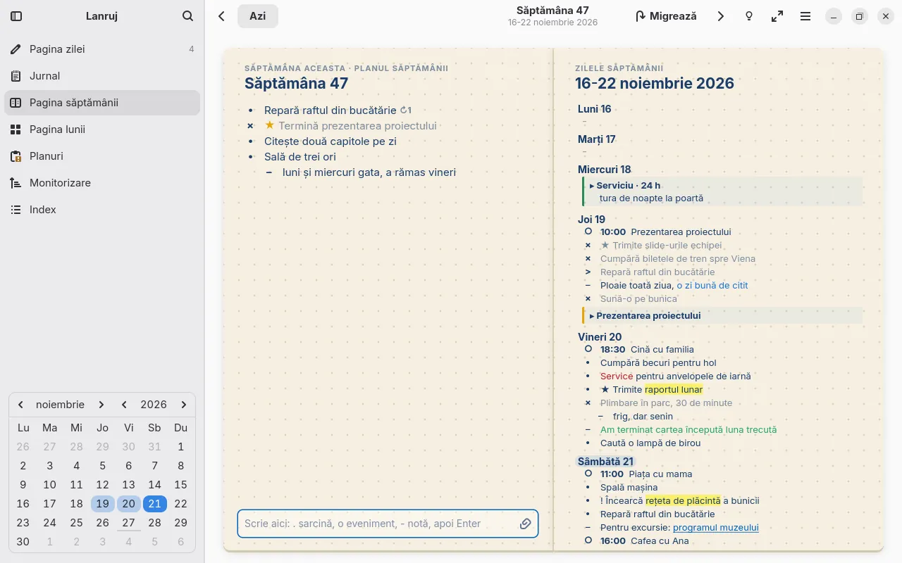

Ziua, săptămâna, luna și planurile
Pagina săptămânii îți arată planul alături de fiecare zi a săptămânii. Pagina lunii cuprinde calendarul și sarcinile lunii. În Planuri notezi ce urmează mai târziu, iar la începutul fiecărei luni intrările se mută singure la locul lor.
